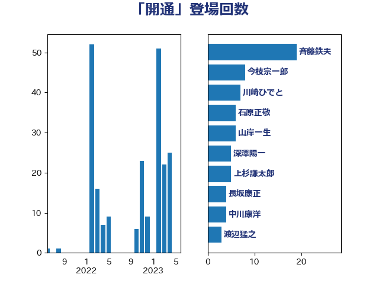

単語「開通」

| 赤羽一嘉 | 公明党 | 20 回 |
| 今枝宗一郎 | 自由民主党 | 12 回 |
| 大口善徳 | 公明党 | 11 回 |
| 斉藤鉄夫 | 公明党 | 10 回 |
| 稲津久 | 公明党 | 10 回 |
| 川崎ひでと | 自由民主党 | 7 回 |
| 足立敏之 | 自由民主党 | 6 回 |
| 石原正敬 | 自由民主党 | 5 回 |
| 渡辺猛之 | 自由民主党 | 4 回 |
| 城井崇 | 立憲民主党 | 3 回 |
| 渡辺周 | 立憲民主党 | 3 回 |
| 菅義偉 | 自由民主党 | 3 回 |
| 三浦信祐 | 公明党 | 2 回 |
| 中野英幸 | 自由民主党 | 2 回 |
| 大西英男 | 自由民主党 | 2 回 |
| 平沢勝栄 | 自由民主党 | 2 回 |
| 武井俊輔 | 自由民主党 | 2 回 |
| 源馬謙太郎 | 立憲民主党 | 2 回 |
| 秋野公造 | 公明党 | 2 回 |
| 紙智子 | 日本共産党 | 2 回 |
| 藤原崇 | 自由民主党 | 2 回 |
| 西銘恒三郎 | 自由民主党 | 2 回 |
| 長浜博行 | 無所属 | 2 回 |
| 高橋千鶴子 | 日本共産党 | 2 回 |
| 上杉謙太郎 | 自由民主党 | 1 回 |
| 中谷真一 | 自由民主党 | 1 回 |
| 伊波洋一 | 無所属 | 1 回 |
| 佐々木紀 | 自由民主党 | 1 回 |
| 和田政宗 | 自由民主党 | 1 回 |
| 国定勇人 | 自由民主党 | 1 回 |
| 國重徹 | 公明党 | 1 回 |
| 堀井学 | 自由民主党 | 1 回 |
| 大塚耕平 | 国民民主党 | 1 回 |
| 大島敦 | 立憲民主党 | 1 回 |
| 大西健介 | 立憲民主党 | 1 回 |
| 大野泰正 | 自由民主党 | 1 回 |
| 小島敏文 | 自由民主党 | 1 回 |
| 工藤彰三 | 自由民主党 | 1 回 |
| 平山佐知子 | 無所属 | 1 回 |
| 平木大作 | 公明党 | 1 回 |
| 早坂敦 | 日本維新の会 | 1 回 |
| 朝日健太郎 | 自由民主党 | 1 回 |
| 本村伸子 | 日本共産党 | 1 回 |
| 本田顕子 | 自由民主党 | 1 回 |
| 杉久武 | 公明党 | 1 回 |
| 松野博一 | 自由民主党 | 1 回 |
| 森屋隆 | 立憲民主党 | 1 回 |
| 横沢高徳 | 立憲民主党 | 1 回 |
| 池下卓 | 日本維新の会 | 1 回 |
| 浅田均 | 日本維新の会 | 1 回 |
| 浜口誠 | 国民民主党 | 1 回 |
| 白石洋一 | 立憲民主党 | 1 回 |
| 緑川貴士 | 立憲民主党 | 1 回 |
| 美延映夫 | 日本維新の会 | 1 回 |
| 芳賀道也 | 国民民主党 | 1 回 |
| 茂木敏充 | 自由民主党 | 1 回 |
| 道下大樹 | 立憲民主党 | 1 回 |
| 酒井庸行 | 自由民主党 | 1 回 |
| 高木啓 | 自由民主党 | 1 回 |